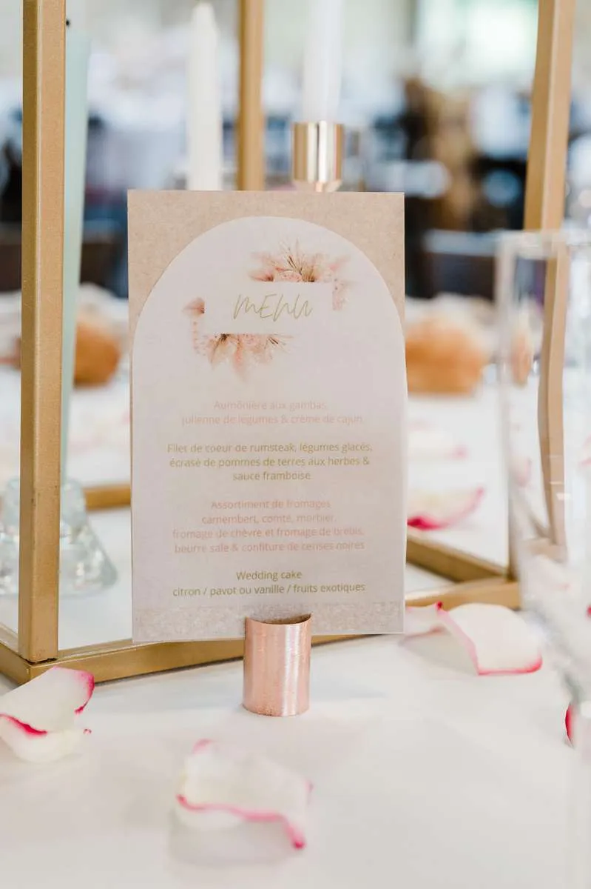
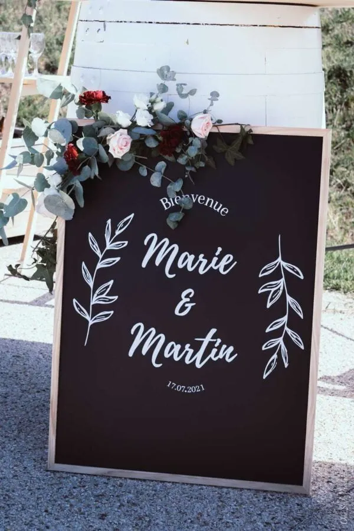

From planning
to rentals
Three wedding packages, and rentals to bring your celebration to life.
 © Tristan Perrier
© Tristan PerrierFull wedding planning
Complete, bespoke planning in Bordeaux and throughout France.
Planning a wedding takes time, and finding the best suppliers (venue, caterer, DJ…) is not always easy.
With me as your wedding planner and designer, your preparations stay serene. I am by your side to personalise your wedding with my expertise and care.
Optional: my presence and coordination of the day-after brunch.
Planning
- Discovery meeting: who you are and what you expect from your wedding
- Brief and timelines through to the day
- Shared planning tools and ongoing advice
- Budget, cost allocation and financial tracking
- Accommodation and transport: proposals and management
Production
- Supplier selection, tastings, negotiation, meetings, quotes and contracts
- Financial follow-up and supplier management
- Technical visits of the venue
- Logistics: set-up and installation of each space
Design
- Scenographic concept, moodboard and shopping list
- Projected budget: stationery, ceremony, cocktail hour, dinner, day after
- Technical quotes: marquees, flooring, sound and lighting, florist, graphic designer, furniture, tableware
Coordination
- Welcoming and managing suppliers and guests
- By your side the day before and on the day
- Coordinating speeches and surprises with your loved ones
- Supervision and coordination of your wedding day
Your wedding in six steps
Briefing
What you love, what you don't, how you met, your story, a shared passion… You have plenty of ideas for your wedding. Now it is my turn to make those dreams real, for you and your guests.
Guidance
Trust is built over time: regular conversations by phone, email or in person, plus my planning tools and progress documents. I become your main point of contact with every supplier.
Supplier management
I curate a list of trusted suppliers suited to your personalities, expectations and budget. I gather and review quotes, arrange meetings and manage contracts.
Scenography
A collection of inspiration for every temporary space, an overall decor budget and quotes from specialist suppliers: flowers, furniture, lighting and rentals.
Production
I purchase or rent through my professional accounts, then store and produce every decorative element: guest favours, signage, seating plans and more.
Installation & the day
I install every element to create the visual atmosphere, then coordinate the event itself: suppliers, the unexpected, entertainment. Above all, I stay by your side.
An online wedding file, available 24/7
Budget, wedding-day schedule, to-do list, a briefing for every supplier, guest list, seating plan, design brief and shopping list, photo list… The design book gives you a preview of the scenography. Meetings mark each key stage, and I remain available by phone and WhatsApp.
 © Tristan Perrier
© Tristan PerrierDesign & styling
Building a theme, a world that is entirely yours.
A wedding is remembered for its atmosphere and the beauty of the moment. You probably have a thousand ideas in mind; my role as a wedding designer is to create magic, a new experience, and turn your dreams into reality.
I lead every supplier with an iron hand in a velvet glove to make the day breathtaking: temporary sets, aesthetic and technical solutions, and the safety of every installation.
My role
- Drawing up the brief
- Wedding styling meeting: theme, concept, colours, mood and budget
- Technical quotes: marquees, flooring, sound and lighting, florist, graphic designer, furniture, tableware
- Moodboards, colour palettes and stationery proposals
- Shopping list and projected budget for purchases and rentals
- Sourcing, buying and renting decor
- Making the final details: tableware, kids' corner, ceremony, signage, seating plan, card box, guest book…
- Installing the reception design on the day
Design briefing
A wide catalogue to define the mood and style of your wedding: themes, colours, textures, tableware, furniture, stationery, wedding party.
Design book & budget
A design book with several proposals for each space, followed by a shopping list with a projected budget for purchases and rentals.
Sourcing & making
Once you approve, I start sourcing and making each element, because what you dream of is not always available off the shelf.
Installation
On the day, from the ceremony arch to each place card, everything is set with care so you can live a dream day.
 © Tristan Perrier
© Tristan Perrier © Tristan Perrier
© Tristan Perrier

 © Tristan Perrier
© Tristan Perrier
 © Tristan Perrier
© Tristan PerrierOn-the-day coordination
You have planned it all? Now enjoy your wedding.
I step in to manage the timing, welcome your suppliers, set up your decor and the small details that matter to you. A few months before the wedding, I discreetly guide you through the final preparations.
- Discovery meeting about your plans, 3 months ahead
- Liaising with your chosen suppliers on final details
- Wedding-day run sheet and coordination of surprises
- Supervising the florist and decor
- Welcoming and guiding guests
- Managing timing and the unexpected
Lovely Day Event also offers…

Photo booth rental
Somewhere between a smartphone and a vintage photo booth, it instantly captures moments of fun and joy and prints your pictures in seconds. It also makes GIFs, boomerangs and short videos.
Easy to transport and set up, it comes with 400 professional-quality 4×6 prints personalised to your wedding theme. Every photo is shared on a drive 48 hours after the event.
Need a backdrop? I also design a photo booth corner to match your theme.
More about the photo booth
Decor rental
A curated collection of decor pieces to elevate your wedding. Get in touch to receive the full list.
Explore decor rentalYour questions
When should we hire a wedding planner?
We already have our venue. What happens next?
What if something doesn't go to plan on the day?
Do you plan weddings for couples living abroad?
“Love your wedding day, and you'll love for a lifetime.”
Enquire